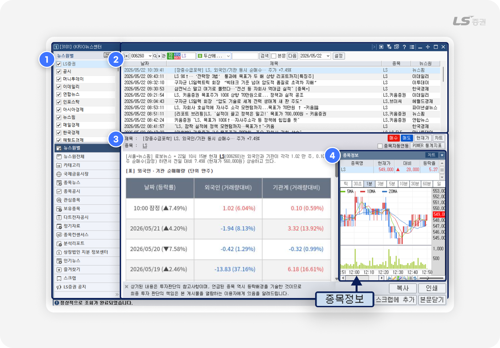
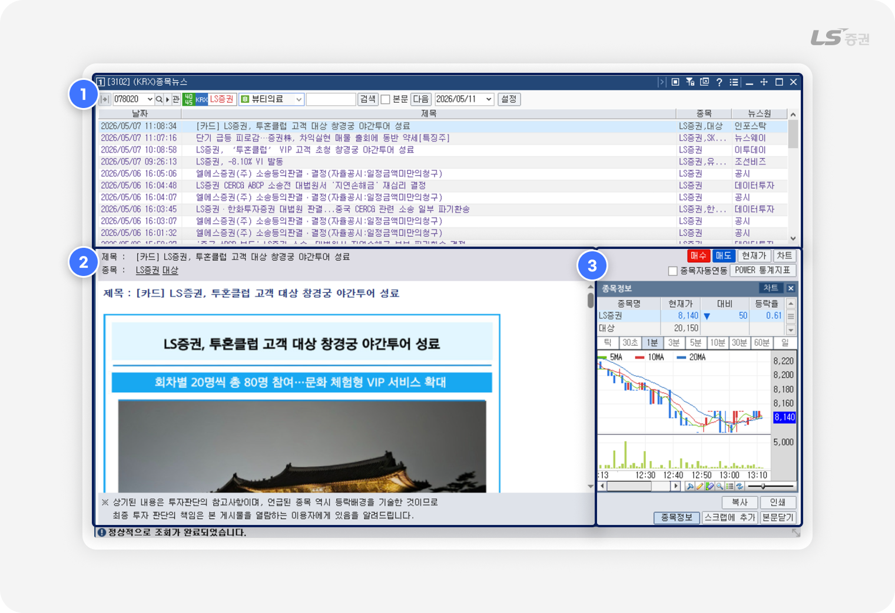
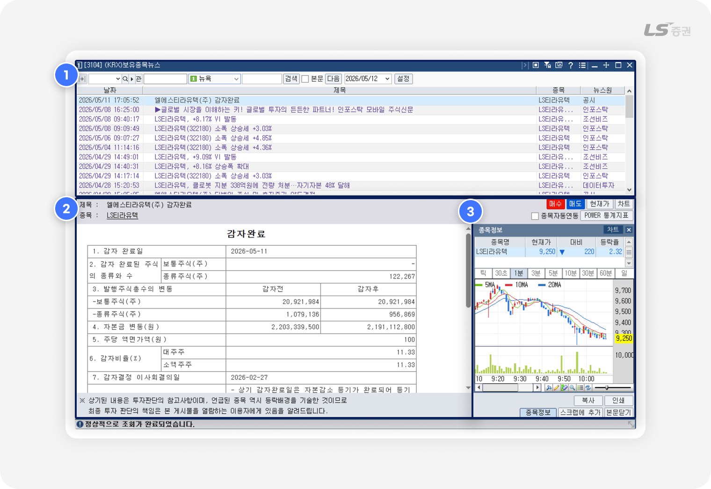
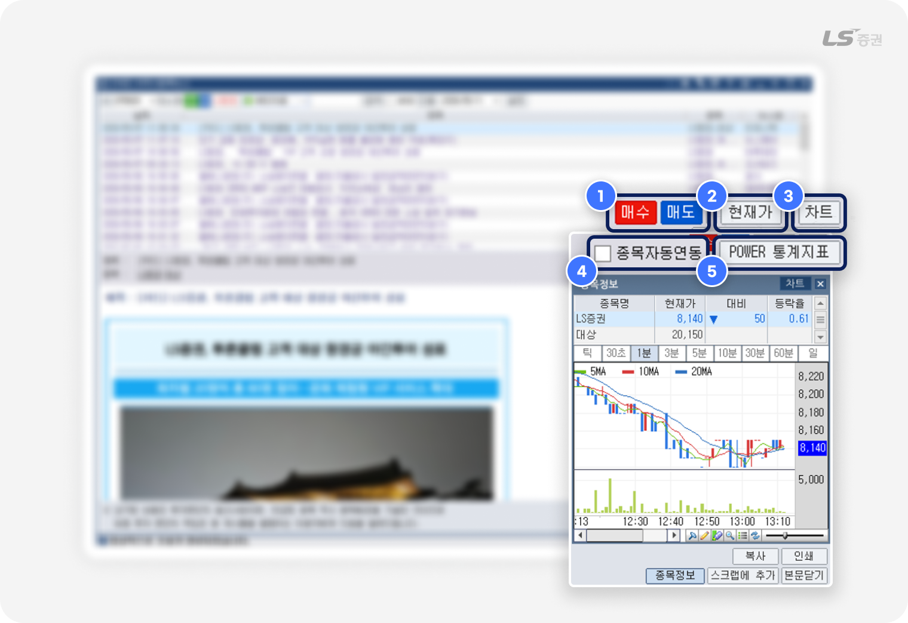
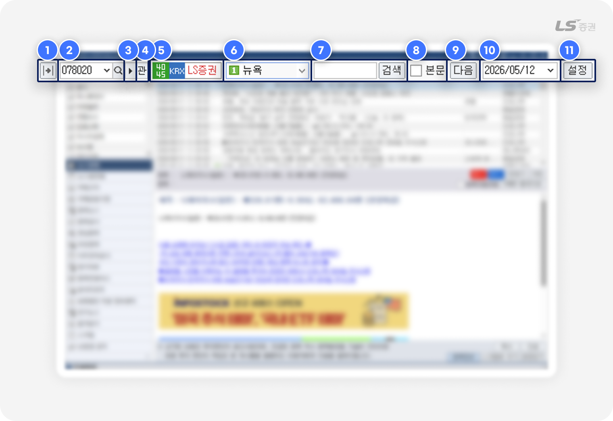
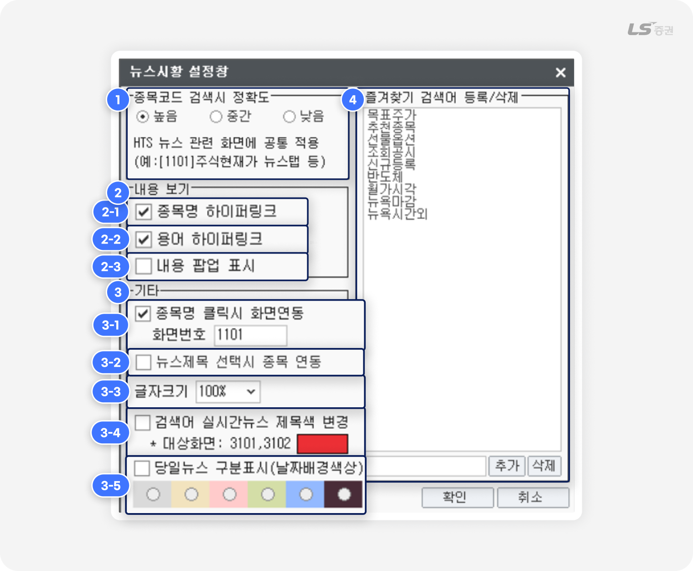
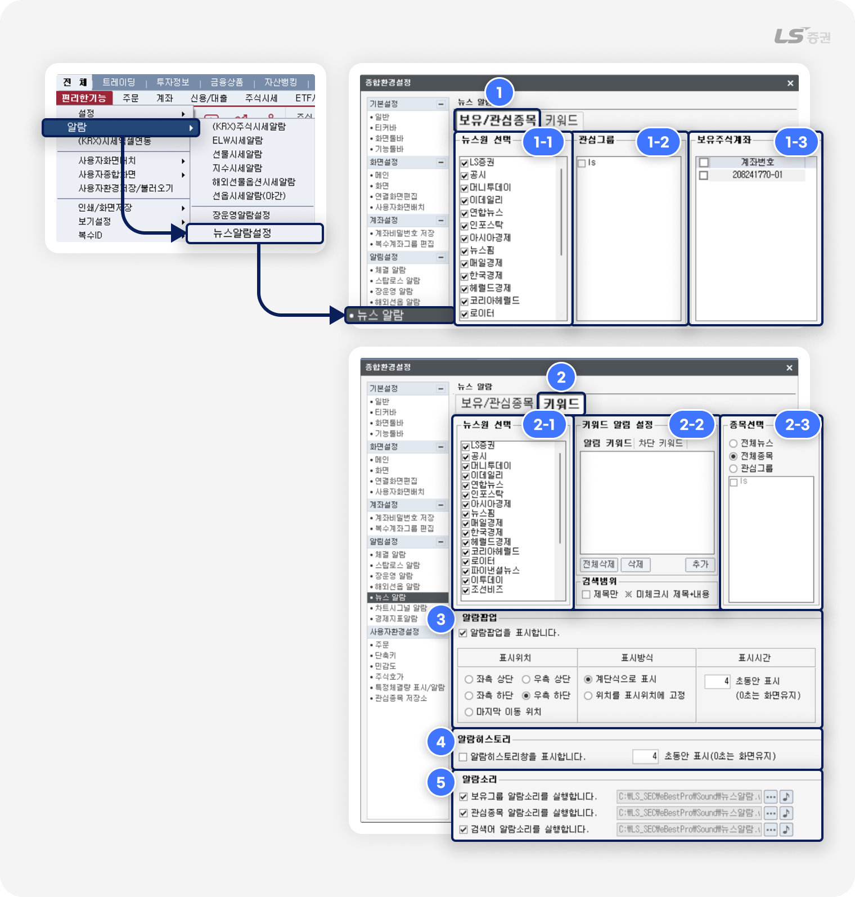

.png)
뉴스
투자의 시야를 넓히는
실시간 인사이트
뉴스 화면은 시장의 흐름을 신속하게 파악하고 투자 의사를 결정하는 데 중요한 역할을 수행합니다.
실시간으로 업데이트되는 종목별 이슈와 기업 동향을 통해 내 자산에 미칠 영향을 종합적으로 진단할 수 있는 투자 지표를 제공합니다.
방대한 금융 데이터 속에서 필요한 정보만 빠르게 필터링하고, 정확한 데이터 기반으로 매매 타이밍을 잡을 수 있습니다. 지금부터 대표적인 뉴스 화면의 구성과 주요 특징을 안내해 드립니다.
시장 이슈부터 종목 대응까지 한번에
뉴스관련 주요 화면
| 화면 | 설명 |
|---|---|
| [3101] 뉴스센터 | 카테고리별 분류를 통해 시장 전반의 주요 소식을 한눈에 파악 |
| [3102] 종목뉴스 | 특정 종목의 실시간 이슈를 추적하여 매수 및 매매 타이밍 포착 |
| [3104] 보유종목뉴스 | 현재 보유 중인 종목의 뉴스를 선별하여 자산 변동성 및 리스크 관리 |
뉴스센터
[3101] 뉴스센터 화면에서는 시장의 방대한 뉴스를 카테고리별로 분류하여 효율적으로 탐색할 수 있습니다.

-
1
뉴스 카테고리
- 좌측 메뉴에서 원하는 언론사나 분야만 선택해 나만의 맞춤형 뉴스 카테고리를 구성 및 선별합니다.
-
2
뉴스 목록
- 설정한 조건의 뉴스 목록을 실시간으로 확인하고, 키워드 검색을 통해 원하시는 핵심 이슈를 신속하게 조회합니다.
-
3
뉴스 상세 본문
- 기사의 상세한 내용을 확인 할 수 있으며, 전문을 읽은 뒤, 상단의 [매수]·[매도] 버튼을 클릭하여 주식주문 화면으로 즉시 연결할 수 있습니다.
-
4
종목정보
- 특정 종목과 연계된 뉴스 기사의 상세 본문 열람 시, 하단의 [종목정보] 버튼을 클릭하면 본문 우측에 종목정보 영역이 표출됩니다.
업종 분석에서 접하는 주요 지표
| 뉴스원전체 | 특정 언론사에 국한되지 않고 HTS에서 제공하는 모든 매체의 뉴스를 한 번에 조회 |
| 국제금융시장 | 미 증시, 글로벌 환율, 금리 등 국내 시장에 직접적인 영향을 주는 해외 경제 동향 파악 |
| 종목뉴스 | 개별 주식 종목들의 시세에 영향을 줄 수 있는 특정 뉴스 기사만 모아서 탐색 |
| 종목공시 | 실적 발표, 대규모 계약 등 기업이 주식 시장에 의무적으로 발표하는 공식 정보 확인 |
| 관심종목 | 사용자가 HTS에 미리 등록해 둔 관심 종목 그룹의 뉴스만 선별하여 집중 모니터링 |
| 보유종목 | 현재 내 계좌에 있는 종목들의 이슈만 빠르게 모아보며 즉각적인 리스크 및 수익 관리 |
| 다트전자공시 | 금융감독원(DART)에 등록되는 기업들의 상세 공시 원문을 화면 이동 없이 직접 조회 |
| 정기자료 | 마감 시황, 증시 캘린더 등 주기적으로 발행되는 시장 요약 및 통계 자료 확인 |
| 종목컨센서스 | 증권사 전문가들이 예측한 특정 기업의 향후 실적 전망치와 목표 주가 동향 파악 |
| 분석리포트 | 애널리스트가 작성한 시장 시황, 산업 섹터, 개별 종목에 대한 심층 분석 보고서 열람 |
| 상장법인 지분 정보센터 | 상장 기업 대주주 및 주요 임원들의 지분(주식) 변동 내역을 통해 내부 흐름 추적 |
| 인기뉴스 | 현재 주식 시장에서 투자자들이 가장 많이 클릭하고 읽고 있는 핫이슈 기사 랭킹 확인 |
| 즐겨찾기 | 사용자가 별도로 설정한 '핵심 키워드'가 포함된 맞춤형 뉴스만 자동으로 모아주는 탭 |
| 스크랩 | 장중 바빠서 놓친 기사를 나중에 다시 읽기 위해 사용자가 개별적으로 저장해 둔 뉴스 보관함 |
| LS증권 공지 | 시스템 점검, 서비스 변경, 이벤트 등 LS증권에서 고객에게 제공하는 공식 안내 사항 |
종목뉴스
[3102] 종목뉴스 관심 종목의 이슈를 확인하고, 즉각적인 차트 분석과 매매까지 한 번에 끝내는 올인원 타이밍 화면입니다.

-
1
뉴스 목록
- 조회를 원하는 특정 종목을 선택하거나 키워드를 입력하여 해당 종목과 관련된 뉴스 목록을 기간별로 조회할 수 있습니다.
-
2
뉴스 본문
- 상단의 뉴스 목록(1번)에서 선택한 특정 뉴스의 기사 전문과 관련 이미지를 화면 전환 없이 하단에서 상세하게 표시합니다.
-
3
종목 정보 및 차트
- 기사와 관련된 종목의 실시간 시세 및 미니 차트를 조회하며, 우측 상단의 [매수], [매도] 버튼을 클릭하여 주식주문 화면으로 즉시 연결할 수 있습니다.
보유종목뉴스
[3104] 보유종목뉴스 현재 계좌에 보유 중인 종목의 뉴스만 모아 조회하고, 실시간 차트 확인 및 매매까지 한 화면에서 지원합니다.

-
1
뉴스 목록
- 현재 계좌에 보유 중인 종목과 연관된 뉴스 목록을 자동으로 선별하여 표출하며, 키워드 및 기간 설정을 통한 맞춤형 검색 기능을 지원합니다.
-
2
뉴스 본문
- 상단의 뉴스 목록(1번)에서 선택한 특정 뉴스의 기사 전문과 관련 이미지를 화면 전환 없이 하단에서 상세하게 표시합니다.
-
3
종목 정보 및 차트
- 기사와 관련된 종목의 실시간 시세 및 미니 차트를 조회하며, 우측 상단의 [매수], [매도] 버튼을 클릭하여 주식주문 화면으로 즉시 연결할 수 있습니다.
함께 활용하면 유용한 환경설정 및 검색 기능을 확인해보세요
뉴스 공통 콘텐츠 소개
도구모음

-
1
매수 / 매도
- 클릭 시 해당 종목의 주식주문 화면이 연동됩니다.
-
2
현재가
- 클릭 시 [1101] 현재가 창을 즉시 실행합니다.
-
3
차트
- 클릭 시 [4001] 주식종합차트 창을 즉시 실행합니다.
-
4
종목자동연동
- 체크 시 실시간으로 새로운 뉴스가 수신될 때마다, 현재 열려 있는 시세·차트 등 모든 종목 화면이 해당 뉴스 종목으로 실시간 동시 변경됩니다.
-
5
POWER 통계지표
- 한국은행 금융·경제 스냅샷 홈페이지로 이동합니다.
검색

-
1
메뉴 펼침 / 접힘
- 화면 좌측의 '뉴스원 및 카테고리' 메뉴 영역을 숨겨 본문을 더 넓게 보거나, 다시 화면에 나타나도록 조작할 수 있습니다.
-
2
종목 검색
- 입력한 종목과 관련된 뉴스를 검색합니다.
-
3
종목 자동 검색
- 최근 조회한 종목 리스트를 순차적으로 자동 조회합니다.
-
4
관심종목 등록
- 현재 선택된 종목을 '관심종목' 그룹에 즉시 등록할 수 있습니다.
-
5
종목 조회
- 선택한 종목을 조회할 수 있습니다.
-
6
실시간 검색어 순위
- 실시간으로 검색어 순위를 조회합니다.
-
7
검색어 입력
- 입력한 검색어를 포함한 뉴스를 검색합니다.
-
8
본문 검색 옵션
- 체크 시 검색어가 뉴스 본문에 포함된 경우를 검색합니다.
-
9
다음 뉴스 조회
- 과거의 뉴스 목록을 추가 조회합니다.
-
10
조회일자 생성
- 원하는 일자의 뉴스 기사를 조회할 수 있습니다.
-
11
설정 버튼
- 검색 정확도, 내용 표시 방법, 연동화면, 즐겨찾기 검색어 등 뉴스 검색과 관련된 상세 조건을 설정할 수 있습니다.
뉴스시황 설정창

-
1
종목코드 검색 시 정확도
- 특정 종목코드로 뉴스를 검색할 때, 기사 내용과의 연관성 필터링 기준을 3단계로 지정합니다.
- 기준을 '높음'으로 설정할수록 해당 종목이 핵심으로 다루어진 기사 위주로 선별됩니다.
-
2
내용 보기
번호 항목 설명 2-1 종목명 하이퍼링크 활성화 시 뉴스 본문에 포함된 기업 및 종목명에 링크가 생성됩니다. 해당 명칭을 클릭하면 지정된 연동 화면으로 신속하게 연결됩니다. 2-2 용어 하이퍼링크 활성화 시 기사 내 주요 금융 및 경제 용어에 링크가 생성됩니다. 해당 용어를 클릭하면 상세 정의를 제공하는 뜻풀이 팝업창이 나타납니다. 2-3 내용 팝업 표시 활성화 시 뉴스 목록의 특정 기사 제목 선택할 때, 화면 전환 없이 기사의 본문을 팝업창으로 볼 수 있습니다. -
3
기타 설정
번호 항목 설명 3-1 종목명 클릭 시 화면연동 뉴스 본문의 종목명을 클릭했을 때 연동하여 열어볼 화면을 화면번호 입력을 통해 직접 지정합니다. (기본값: [1101] 주식현재가 화면) 3-2 뉴스제목 선택 시 종목 연동 뉴스 목록에서 기사 제목을 선택하는 것만으로도, 현재 열려 있는 다른 분석 화면들의 대상 종목이 해당 기사의 관련 종목으로 자동 동기화됩니다. 3-3 글자크기 뉴스 본문 및 목록의 텍스트 크기를 최소 90%부터 150%까지 백분율(%) 단위로 조절하여 최적의 가독성을 확보할 수 있습니다. 3-4 검색어 실시간뉴스 제목색 변경 검색어가 포함된 뉴스기사의 제목 색상이 지정된 색으로 구분 표기됩니다. (대상 화면은 [3101]뉴스센터, [3102]종목뉴스에 제한하여 적용) 3-5 당일뉴스 구분표시 (날짜배경색상) 당일 뉴스의 날짜 배경에 지정된 색으로 표기하여, 과거 뉴스와 구분 표기됩니다. -
4
즐겨찾기 검색어 등록/삭제
- 상시 모니터링하려는 관심 키워드(예: 목표주가, 추천종목, 반도체 등)의 등록 현황 조회할 수 있습니다.
- 입력란에 원하는 단어를 기입한 후 [추가] 버튼을 클릭하면 즐겨찾기 리스트에 등록되며, 목록에서 단어를 선택 후 [삭제] 버튼 클릭 시 해제됩니다.
- 본 목록에 등록된 키워드는 뉴스 화면 내 '즐겨찾기' 탭과 연동되어, 클릭 한 번으로 관련 뉴스를 즉시 선별 조회할 수 있습니다.
뉴스알람 설정창

-
1
보유/관심종목
번호 항목 설명 1-1 뉴스원 선택 알람을 수신할 언론사 및 미디어 매체(LS증권, 공시, 연합뉴스, 로이터 등)를 개별적으로 선택합니다. 체크를 해제한 매체의 기사는 알람 대상에서 제외됩니다. 1-2 관심그룹 미리 등록해 둔 관심종목 그룹 리스트가 나타납니다. 특정 관심그룹을 선택하면 해당 그룹에 포함된 종목의 뉴스만 선별하여 알람을 받아볼 수 있습니다. 1-3 보유주식계좌 보유 중인 계좌를 조회할 수 있으며, 선택한 계좌에 보유 중인 종목의 신규 뉴스가 발생할 경우 실시간으로 알람을 받을 수 있습니다. -
2
키워드
번호 항목 설명 2-1 뉴스원 선택 알람을 수신할 언론사 및 미디어 매체를 개별적으로 선택하여 알람 대상을 필터링합니다. 2-2 키워드 알림설정 - 알림 키워드 : 실시간으로 최우선 모니터링할 핵심 단어(예: M&A, 경영권+양수도, 공급계약+체결 등)를 등록합니다. [추가] 버튼을 통해 키워드 등록이 가능하며, 키워드 선택 후 [삭제] 또는 [전체삭제]할 수 있습니다.
- 차단 키워드 : 광고성 기사나 불필요한 스팸성 단어를 등록하여 해당 단어가 포함된 알람을 상시 차단합니다.
- 검색범위 (☑ 제목만): 체크 시 기사의 '제목'에 등록 키워드가 포함된 경우에만 알람이 발생합니다. 체크를 해제하면 '제목', '본문 내용'을 대상으로 키워드를 감지합니다.
2-3 종목선택 키워드 알람을 적용할 대상 범위(전체뉴스 / 전체종목 / 관심그룹)를 지정할 수 있습니다. -
3
알람팝업
번호 항목 설명 3-1 알람팝업 표시 활성화 시 신규 뉴스가 수신될 때 화면에 실시간 알림창(팝업)을 표시합니다. 3-2 표시위치 팝업이 표기될 화면상 위치(좌측 상단/하단, 우측 상단/하단, 마지막 이동 위치)를 지정합니다. 3-3 표시방식 알람이 연속으로 발생할 때 팝업창을 순차적으로 쌓아서 보여주는 '계단식 표시'와, 동일한 좌표에 고정하여 보여주는 '위치를 표시위치에 고정' 중 선택합니다. 3-4 표시시간 팝업창이 화면에 유지될 시간(초 단위)을 설정합니다. 0초로 입력할 경우 사용자가 직접 닫기 전까지 창이 유지됩니다. -
4
알람히스토리 창 표시
- 알람히스토리창을 표시합니다 : 활성화 시 수신된 알람 기록들을 순차적으로 누적하여 보여주는 별도의 히스토리 창을 지정된 시간(초) 동안 표시합니다.
-
5
알람소리 설정
번호 항목 설명 5-1 보유그룹 / 관심종목 / 검색어 알람소리 실행 알람 대상별(보유종목 뉴스, 관심종목 뉴스, 등록 키워드 뉴스)로 알람 소리 사용 여부를 개별 설정합니다. 5-2 경로 설정 및 청취
([...] / [🎵])각 항목 우측의 [...] 버튼을 클릭하여 사용자 PC에 저장된 원하는 효과음 파일(.wav)을 알람음으로 지정할 수 있으며, [🎵] 버튼을 눌러 설정된 소리를 미리 들어볼 수 있습니다.
LS증권 투혼 HTS [3101] 뉴스센터, [3102] 종목뉴스, [3104] 보유종목뉴스 화면의 주요 기능과 활용 방법을 확인하였습니다. 실시간 수신되는 방대한 뉴스 데이터를 화면별 특성에 맞춰 조회하고, 뉴스시황 및 알람 설정을 연계하여 개인별 환경에 적합한 정보 분석 체계를 구축해 보시기 바랍니다.
감사합니다!